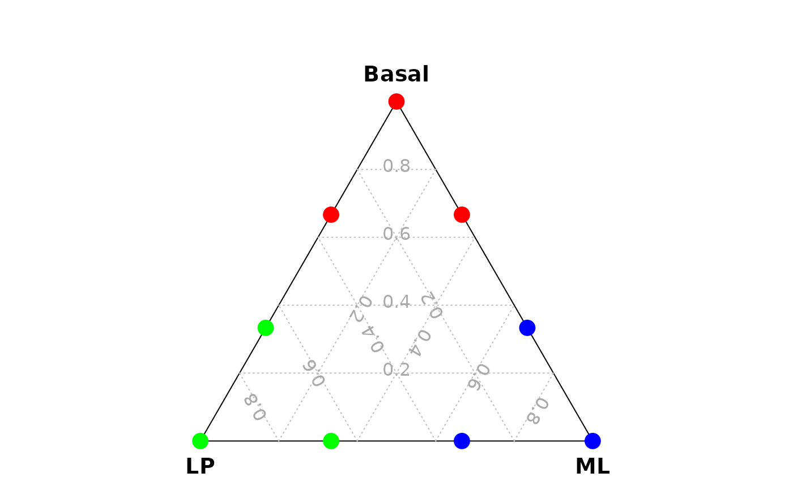

vcdTernaryPlot_functions.RdvcdTernaryPlot() is modified from vcd::ternaryplot() and can be used to draw a ternary plot.
vcdTernaryPlot(
data = NULL,
order_colnames = c(3, 2, 1),
group = NULL,
group_levels = levels(factor(group)),
group_color = NULL,
label_position_x = c(0.1, 0.9, 0.5),
label_position_y = c(0.05, 0.05, 0.85),
show_legend = FALSE,
legend_position = c(0.1, 0.5),
prop_size = FALSE,
point_shape = 16,
point_size = 0.5,
label_text_size = 1.2,
legend_point_shape = 16,
legend_point_size = 0.5,
legend_text_size = 1.5,
legend_vertical_space = 1.5,
scale_legend = 0.5,
n_col = NULL,
facet = FALSE,
title = NULL
)A data.frame or matrix of three columns
A vector to order the three columns
A vector to specify row (cell) annotation or classification
Levels of the group vector, default is levels(factor(group))
Colors used for the group levels
X positions for the three labels
Y positions for the three labels
Whether to show the legend
Legend position, e.g., 'right' or 'center' or c(0.1,0.5)
Same parameter used in vcd::ternaryplot(), if TRUE, the symbol size is plotted proportional to the row sum of the three variables
Shape for the point, default is pch 16
Size of point, default is 0.5
Size of the three labels, default is 1.2
Shape for the point of legend, default is pch 16
Size of point of legend, default is 0.5
Text size of legend, default is 1.5
Vertical space between legend texts, default is 1.5 (lines)
Scaled width of legend
Number of columns for plotting
whether to show facets
Title of the ternary plot, default is NULL
data_for_ternary = data.frame(Basal = c(1,2,2,0,0,1,0,1,0),
ML = c(0,1,0,1,2,2,0,0,1),
LP = c(0,0,1,0,1,0,1,2,2) )
vcdTernaryPlot(data = data_for_ternary,
group = rep(c("Bas","ML","LP"),each=3),
group_levels = c("Bas","LP","ML"),
group_color = c("red","green","blue"),
point_size = 1,
legend_point_size = 0.6)
